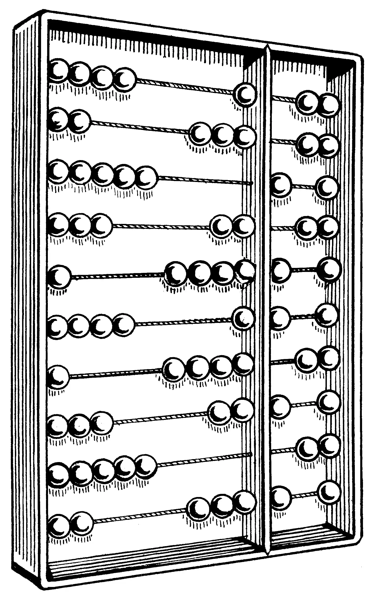
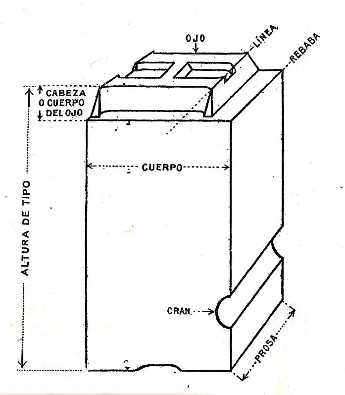

Shiftable Type is a grid based typesetting tool developed by Hannes Altmann. Designed for use in the early stages of an editorial design project, it helps quickly sketch, shift, and visualize text arrangement ideas.
INSTRUCTIONS
Click on a tile in the grid to fill it. Click it again to erase
your selection.
To (faster) select multiple tiles in a row, click and hold on a
tile, then drag sideways while keeping the mouse button pressed
(like you would use a digital paint brush).
Do the same on adjacent filled tiles to deselect them one by one.
To quickly fill larger sections of the grid, hold
OPTION / ALT
and the left mouse button, then drag to draw a rectangle over the
area you want to fill. Release the mouse to confirm your
selection.
To move single or adjacent tiles horizontally on the grid, cclick
and hold a tile (or anywhere on its row). While holding the mouse
button, press
SHIFT and drag
left or right — the tiles will move with your cursor.
Hold
SPACE on your
keyboard to pan the canvas, just as in Figma or the Adobe Suite.
You can zoom in (useful for fine grids) by scrolling the
MOUSE WHEEL
or with
TRACKPAD GESTURES
(For the best experience, use an external mouse or activate
„Three Finger Drag” on your trackpad)
CONCEPT
To truly focus on the act of typesetting itself — and to
allow full attention on the structures and forms that emerge through
text arrangement and composition — the text lines are
abstracted into simple geometric shapes.
This simplification and the system’s core modular, rhythmic
mechanics draw inspiration from the
abacus (ancient counting
tool consisting of blocks sliding on rods).

Another aspect carried over from the abacus metaphor is the
restricted movement: Elements can only be drawn and shifted
horizontally.
The way the tool operates is meant to evoke the feel and logic of
manual typesetting from the letterpress era, when workers called
compositors arranged movable type (metal sorts) by hand on composing
sticks.

One key characteristic frome these times I wanted to incorporate is the reversibility of manual typesetting — the fact that each letter could be removed, replaced, or rearranged at any time. This flexibility informed how the tool handles editing: Changes are non-destructive, and everything remains movable and adjustable throughout the process.
IDEA
The idea for this tool came from a personal desire for an
environment where I could quickly sketch layout ideas —
without being held back by software, content, or rigid rules.
I wanted something that felt intuitive and effortless, like a
creative sandbox for typesetting — to test ideas, try out
unconventional approaches and and focus entirely on space, rhythm,
weight, and alignment.
Typefaces in use:
Overused Grotesk by RandomMaerks
Martina Plantijn by Klim Type Foundry
This application was developed as part of the project module
TOOLS: Shapes Without Meaning, supervised by Stephanie Specht, during the summer semester 2025
at the Department of Typography and Type Design,
Bauhaus University Weimar.